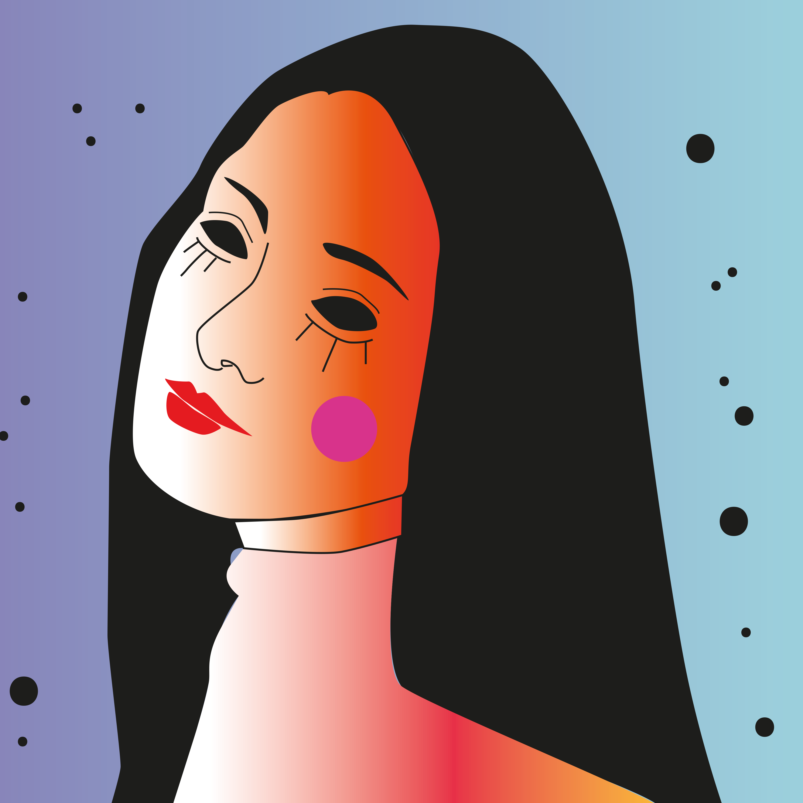
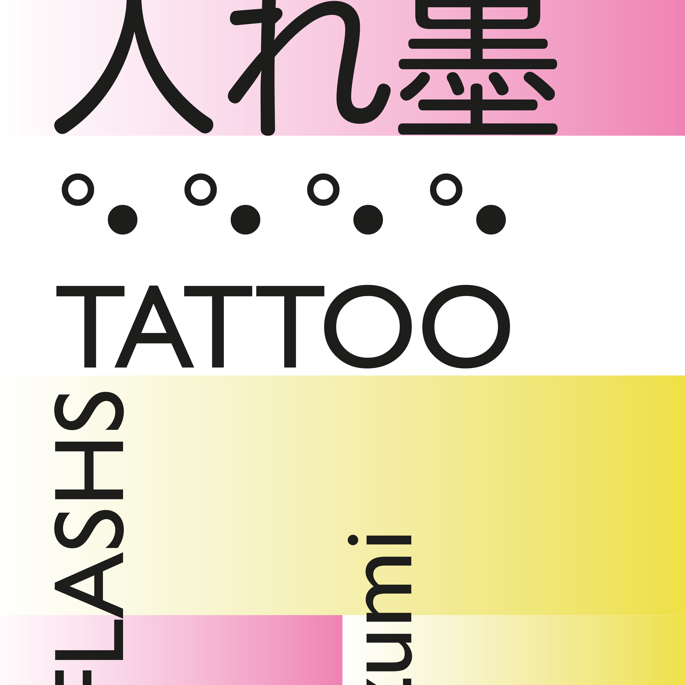
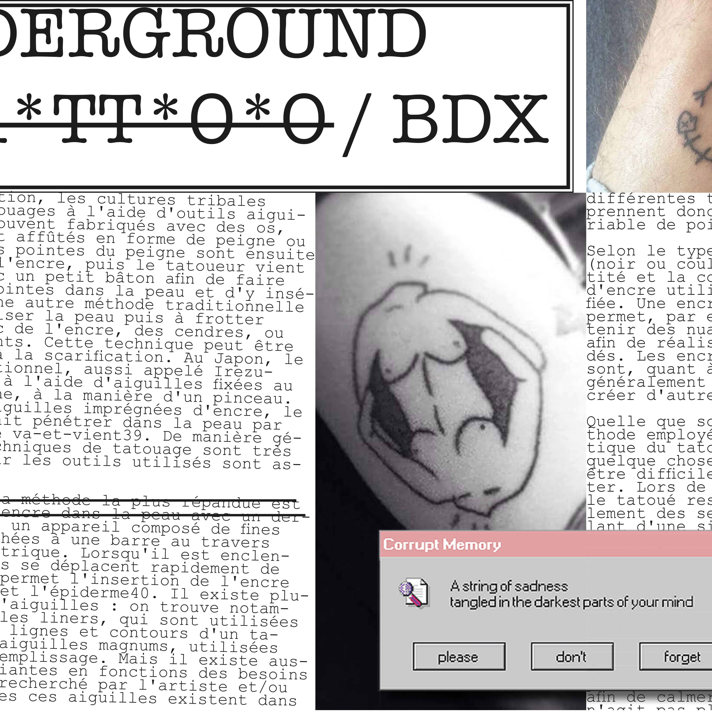

ILLUSTRATION
Ma matière préferée est définitivement l'illustration, en effet, j'adore depuis toujours dessiner et donc il est normal que l'illustration soit devenue pour moi une arme parfaite pour s'exprimer graphiquement. J'aime allier illustrations et typo, ainsi que tatouer mes illus.
Read More

TATTOOS
Ma matiere de prédiliéction étant l'illustration, le tatouage est pour moi une manère de faire vivre mes illus à l'infini en les marquant à jamais sur la peau de mes clients.. j'ai commencé le tatouage par la technique du handpoke et depuis peu, à la machine..
Read More

EDITION
L'édition est pour moi la manière la plus intérréssante de faire vivre et de présenter nos travaux; en effet, on peut créer de magnifiques mise en page et ouvrages que l'on va prendre plaisir à regarder.
Read More